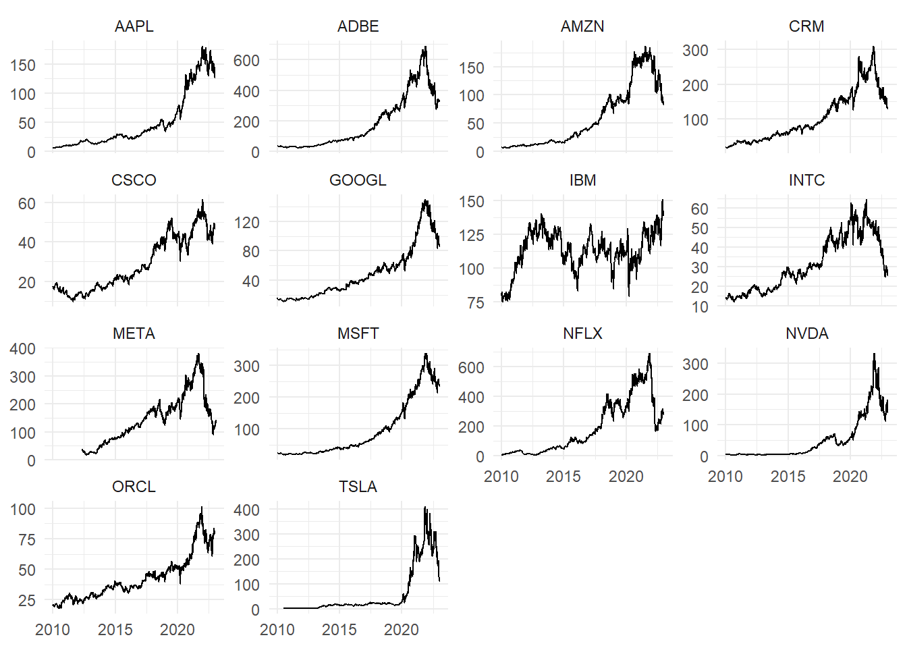

Welcome to my very first #tidytuesday blog post! In this post I will showcase the new per-operation grouping functionality released in dplyr 1.1.0. I also want to demonstrate one of my favorite lesser-known dplyr tricks!
# A tibble: 14 × 3
company stock_symbol n
<chr> <chr> <int>
1 Apple Inc. AAPL 3271
2 Adobe Inc. ADBE 3271
3 Amazon.com, Inc. AMZN 3271
4 Salesforce, Inc. CRM 3271
5 Cisco Systems, Inc. CSCO 3271
6 Alphabet Inc. GOOGL 3271
7 International Business Machines Corporation IBM 3271
8 Intel Corporation INTC 3271
9 Meta Platforms, Inc. META 2688
10 Microsoft Corporation MSFT 3271
11 Netflix, Inc. NFLX 3271
12 NVIDIA Corporation NVDA 3271
13 Oracle Corporation ORCL 3271
14 Tesla, Inc. TSLA 3148
Note: Meta and Tesla did not go public until after Jan 2010, so they have slightly less data.
Now let’s visualize the stocks as simple faceted line charts.
With the exception of IBM, each stock peaks around the end of 2021, and then declines thereafter.
Let’s zoom in on the peaks by plotting them on the same axes. Here we will use the new by argument to find the maximum adj_close for each stock_symbol.
big_tech_stock_prices |>filter(stock_symbol !="IBM") |>slice_max(adj_close, by = stock_symbol) |>ggplot(aes(date, adj_close, color = stock_symbol)) +geom_point() + ggrepel::geom_text_repel(aes(label = stock_symbol), size =3, vjust =-.75) +scale_x_date(labels = scales::label_date_short(), breaks ="month") +labs(title ="Peak Stock Prices", x =NULL, y =NULL) +theme(legend.position ="none")

How steep of a decline do these stocks see in the weeks and months following their peak? How do they compare to each other?
To answer this question, we will need to filter each stock to include only the data following its peak. This may seem trivial at first, but it’s a bit trickier than you might think. Since each stock reaches its peak at a different point, we can’t simply filter the whole data set by a single value.
One approach would be to make a separate tibble containing just the max price dates, join it back with the original, and filter the dates.
peak_price_dates <- big_tech_stock_prices |>slice_max(adj_close, by = stock_symbol) |>select(stock_symbol, peak_date = date, peak_price = adj_close)big_tech_stock_prices |>inner_join(peak_price_dates) |>filter(date >= peak_date) |># for demonstration purposesslice_min(date, n =3, by = stock_symbol) |>select(stock_symbol, date, adj_close)
This solution works, but there’s a better (in my opinion) way that doesn’t require a separate tibble. The method is derived from a base-R concept called subsetting.
Subsetting can be used to filter a vector or dataframe by some condition, much like dplyr::filter. Instead of a function call, we use square brackets ([]).
vec <-0:20# subset to get even numbersvec[vec %%2==0]
[1] 0 2 4 6 8 10 12 14 16 18 20
# subset to get rows with mpg > 21mtcars[mtcars$mpg >21,]
In dplyr, we can apply this same principle by combining a filter with a subset. For our case, we combine filter, subset, and which.max. Coupled with per-operation grouping, we can accomplish the entire process in a single step!
stock_downfalls <- big_tech_stock_prices |># filter date by the grouped and subsetted datefilter(date >= date[which.max(adj_close)], .by = stock_symbol)stock_downfalls |>ggplot(aes(date, adj_close, color = stock_symbol)) +geom_line() + ggrepel::geom_label_repel(aes(peak_date, peak_price, label = stock_symbol), data = peak_price_dates, size =3) +scale_x_date(labels = scales::label_date_short(), breaks ="month") +labs(x =NULL, y =NULL) +theme(legend.position ="none")
Now we can clearly see which stocks endured more dramatic price dips and how they fared over the following 1-2 years.
Thank you so much for reading and I hope this exercise was useful. Please reach out if you have any questions or feedback!